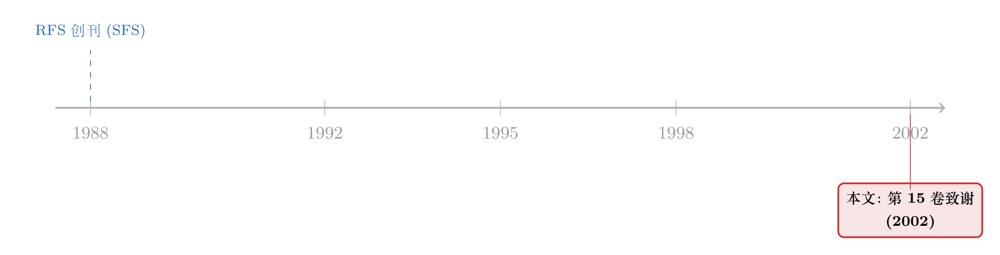

一页致谢里的「隐形账本」：金融学界靠什么免费运转
本文读的是 The Review of Financial Studies (2002, RFS Vol. 15, No. 5) 卷末那一页 Acknowledgements：它没有摘要、没有数据、没有一条回归，通篇只是上千个并排的人名。可正是这页名单，第一次也是唯一一次，把支撑整个金融学科运转的那笔「隐形劳动」——匿名审稿——摆到了纸面上，给它署了名。
1 一页没有作者的「论文」
先说清楚：这不是一篇论文。
它是 RFS 2002 年第 15 卷第 5 期末尾的一页致谢（acknowledgements），署名是「The Executive Editor, Editors, and Associate Editors」，正文只有一句话——感谢过去一年里给予协助的诸位——然后就是名字，名字，名字。四列排开，跨了三页（第 1595 到 1597 页），密密麻麻上千个人名，从 Viral Acharya 一直排到 Luigi Zingales。
如果你把它当成一篇待评的工作论文，那它在任何一个维度上都「不合格」：没有研究问题，没有识别策略，没有样本期，没有一个可以报告的系数。读论文的那套标准动作——先找贡献，再挑识别的漏洞——在这里全部落空。
但这恰恰是它有意思的地方。一份没有任何「内容」的文件，为什么值得期刊每年雷打不动地印一次、占掉三个页码？（这种藏在顶刊「边角料」里的经济学，我在别处也写过，比如《一封涨价通知里的微观经济学》和《七百一十七页上的一段话：一篇没有数据的 RFS「论文」》。）
接着，一个自然的问题是：这页名单到底在「致谢」什么？
2 这页名单，是一张劳动的收据
答案藏在那句套话里——「the assistance we have received」。这上千个人，是过去一年里替 RFS 审过稿的匿名审稿人（anonymous referee）。
要理解这意味着什么，得先想清楚一篇金融论文是怎么「变成」一篇金融论文的。作者投稿，编辑（editor）把它发给两到三位同行；这些同行通常是该细分领域里最懂行的人，他们要花上几个小时甚至几天，逐页读完稿子，挑出识别上的漏洞、数据上的破绽、文献上的疏忽，写一份动辄三五页的审稿报告（referee report），告诉编辑：这篇该不该发、要怎么改。
然后——这是关键——他们什么都拿不到。
没有稿酬。报告是匿名的，作者不知道是谁写的，外人更无从知晓。它不算进任何一份简历，不会出现在 Google Scholar 的引用数里，不会变成下一轮 tenure 评审时的筹码。一个顶尖学者一年可能要审十几二十篇稿子，相当于无偿贡献了几百个小时——而这几百个小时，本可以用来写自己的论文、带自己的学生、争自己的基金。
于是真正的张力出现了：在一个以「发表」论功行赏、人人都精于计算激励的学科里，为什么这些最聪明、最忙、最懂机会成本的人，心甘情愿地把大把时间，免费送给一套连他们名字都不留的制度？
3 一笔典型的「公共品」难题
把审稿这件事翻译成经济学的语言，它就是一个标准得不能再标准的公共品 (public good) 供给问题。
一篇论文经过严格评审之后质量更高、可信度更强，受益的是整个学科——后来读它、引它、在它基础上往前走的所有人。但审稿的成本，却完全落在那两三位审稿人个人头上。收益是公共的、扩散的，成本是私人的、集中的。这正是公共品供给的经典裂缝：每个理性的个体都希望「别人去审、我来享受高质量的期刊」，于是搭便车 (free-riding)，于是供给不足。
按教科书的逻辑，这套系统本该崩溃——审稿人越来越少，审稿越来越敷衍，期刊质量螺旋向下。可现实是，它非但没崩，反而年复一年地运转，质量还相当稳定。这页上千人的名单，本身就是反例：这么多人，真的去审了。
那么，是什么补住了这道裂缝？
4 真正关键的一步：把「隐形」变成「可见」
这里就要回到这页致谢本身了。
公共品困境之所以能被部分化解，靠的从来不是钱，而是声誉 (reputation) 与互惠 (reciprocity)。你今天替别人认真审稿，是因为明天你的稿子也要靠别人认真审——这是一场没有合同、却人人遵守的隐性互惠。同时，「常被编辑找去审稿」本身就是一种地位信号：它意味着你被这个圈子认定为某个领域的权威。编辑会记住谁审得快、审得狠、审得在行；这种被记住，慢慢沉淀成学界内部的声望资本。
但互惠和声誉有个致命弱点：它们大多是私下的、口耳相传的，外人看不见，连当事人也未必有凭据。匿名审稿尤其如此——你做了贡献，却连一个公开的痕迹都不留。
而这页致谢，做的正是「把隐形变可见」这一步。它不能、也不会泄露谁审了哪篇稿（匿名性是这套机制的命根子），但它至少把「这一年里，这些人确实为本刊出过力」这件事，公开地、白纸黑字地记下来。它是这套庞大无偿劳动唯一的一张公开收据——不记金额、不记明细，只记下了出工人的名字。
于是你会发现，这页看似毫无信息量的名单，其实在悄悄地维系激励：它让那笔本该彻底沉默的贡献，获得了一丝丝可见性，让声誉机制有了一个虽然微弱、却真实存在的着力点。这就是为什么它值得每年印一次。
5 名单本身，也是一张学科的地图
再往下想一层，这页名单还顺手泄露了别的东西。
谁的名字出现在 RFS 的审稿人名单里，本身就勾勒出 21 世纪初金融学的版图。你能在上面同时读到资产定价、公司金融、市场微观结构、银行与中介各个分支的代表人物——Yakov Amihud（流动性）、Darrell Duffie（信用与衍生品）、Joel Hasbrouck（微观结构）、Luigi Zingales（公司金融与法律金融）、Geert Bekaert（国际金融）……上千个名字并排在一起，几乎就是一份当年「谁在场」的学科花名册。
这种「从边角料里读出学科结构」的乐趣，和我读 JFE 编委名单、卷末索引时的感受是一样的（参见《八个名字撑起的一页：从编委名单里读一门学科的版图》与《卷末那一页：从一份「索引」里读出 2003 年的金融学》）。一份纯粹用于行政留痕的文件，无意间成了学科社会网络的快照。
6 文献脉络
诚实地说，这页致谢没有引用任何文献——它没有参考文献，因为它本就不是研究。所以这一节的「脉络」，不是论文之间的承继，而是这本期刊、以及这套评议制度自身的脉络。
RFS 由金融研究学会 (Society for Financial Studies) 于 1988 年创刊，到 2002 年这一期，恰好是它运转的第十五个年头（Vol. 15）。十五年里，它和 JFE、JF 一道，把「匿名同行评议」沉淀成了金融学发表的标准流程。而我们手上这页致谢，就是这套流程在某一年留下的一道年轮——它的同类还包括主编的年度报告、编委名单、投稿费调整公告，这些「边角料」共同构成了一个学科的行政骨架。

把这些放在一起看，这页名单的位置就清楚了：它不在「知识的前沿」，而在「知识赖以生产的制度后台」。前沿论文是产品，而它，是记下了生产线上那批无名工人的考勤表。
7 评论与延伸（Q&A + 研究方向）
Q：把一页致谢当成「论文」来评述，是不是过度解读？
某种程度上是的，而且我得坦白：它在学术意义上没有任何可评的「结果」。但「过度解读」恰恰是面对这类文本唯一有意思的读法。它的价值不在文本内部，而在它指向的那套被我们习以为常、却从未认真定价的制度——匿名审稿。读它，是为了把那套制度拎出来看一眼。
Q：审稿是「公共品」，那它和普通的志愿劳动有什么区别？
区别在于互惠的闭环更紧。普通志愿劳动的受益者往往是陌生人，而审稿的受益者就是「未来需要你审稿的同一批同行」——今天你审别人，明天别人审你。这种近乎一一对应的循环，使得声誉与互惠的约束力远强于一般公共品，也是它没有像教科书预言的那样崩溃的原因。
Q：既然激励这么薄弱，为什么不直接给审稿人付钱？
试过，但效果有限。少量稿酬既补偿不了顶尖学者几百小时的机会成本，又可能「挤出」（crowd out）原本由声誉和责任感驱动的内在动机——把一件「学界公民义务」变成一桩报酬低得侮辱人的零工。相比之下，从投稿方收费（见《一封涨价通知里的微观经济学》）来给系统「降噪」，反而更对症。
Q：这页名单泄露作者-审稿人的对应关系吗？会不会破坏匿名性？
不会。它只公布「这一年审过稿的人」这个集合，绝不透露谁审了哪一篇。匿名性是这套机制的命根子——一旦审稿人知道作者能反查到自己，报告就会变得客气而无用。这页致谢精巧之处正在于：它在不碰匿名性的前提下，给集体贡献留了一道公开痕迹。
Q：那这页名单到底有没有「信息含量」？
有，只是不在它声称的维度上。作为「致谢」，它信息量近乎为零；但作为一份社会网络数据，它高度浓缩——上千个名字的同现，本身就是一张 2002 年金融学界「谁在场、谁活跃」的快照。信息藏在名单的结构里，而不在它的字面意思里。
Q：对今天的我们，这页纸还有什么现实意义？
它提醒我们：学术的可信度，归根结底建立在一笔几乎无人计价的劳动之上。当我们讨论「同行评议是否正在失灵」「AI 能不能审稿」时，真正该先想清楚的，是这套制度靠什么激励在运转——而这页名单，就是那套激励留下的、最朴素的物证。
（b）几个可能的研究问题与提案
1. 把历年致谢名单做成「审稿人网络」面板数据。 - 【经济故事】顶刊每年都印这样一页。把 RFS、JFE、JF 二三十年的致谢名单全部数字化，就能得到一个谁在为哪本刊「出工」的动态面板，进而刻画一个学科的核心-边缘 (core-periphery) 结构、代际更替、以及子领域的兴衰。它本质上是一张学界的「隐形协作网络」。 - 【可行性】高。数据全部公开印在期刊里，OCR 即可提取；网络分析方法成熟。难点在消歧重名（如多个「J. Wang」），但可借作者机构与合著关系交叉验证。
2. 审稿声誉与个人产出之间的因果。 - 【经济故事】「频繁被请去审稿」是声誉信号，还是会挤占自己的研究时间、拖累产出？这正是公共品供给里「私人成本 vs. 社会收益」的微观对照。 - 【可行性】中。把致谢名单（审稿频率的代理变量）与个人发表记录匹配，可做面板回归；但「被请审稿」与「学术能力」内生纠缠，需要找外生冲击（如某编辑上任带来的审稿邀约结构突变）才能逼近因果。
3. 把「公共品-声誉」框架搬到信用评级与公司债市场。 - 【经济故事】匿名审稿和评级机构（rating agency）其实是同构的：都是替市场提供「质量认证」这一公共品的中介，都面临声誉约束。审稿靠互惠维系，评级靠付费维系——两套激励结构的对照，能照出付费模式如何扭曲认证质量。 - 【可行性】中。评级与公司债定价数据成熟（如 TRACE），可比较「声誉驱动」与「付费驱动」认证下的信息质量差异；识别上可借监管变动做准自然实验（这条线我在《评级注水，错的真是「谁付钱」吗？》里展开过）。
4. 编辑作为「网络中枢」对论文影响力的因果效应。 - 【经济故事】编辑决定把稿子发给谁审、最终是否录用，处在信息网络的中枢。一位编辑的人脉与品味，是否系统性地改变了某类论文的命运？这关系到学科知识生产的「守门人」机制。 - 【可行性】中偏低。编辑-论文匹配可从编委名单与刊发记录拼出，但「编辑影响」与「论文本身质量」难以分离，需要编辑轮换这类外生变动来识别。
8 参考文献
这页致谢本身不含任何参考文献。可以确切引用的，只有它所在的期刊本身：
- The Review of Financial Studies (2002). Acknowledgements. The Review of Financial Studies 15(5), 1595–1597.